🌑 O CÉU SEPULTO – A PRIMEIRA LIÇÃO
#001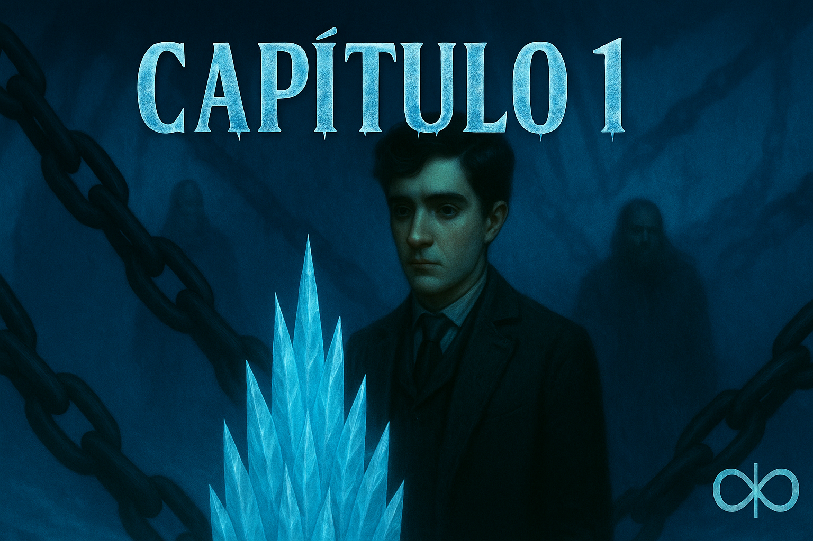
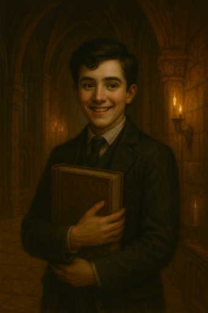
O som dos passos ecoava entre os pilares partidos e os vitrais estilhaçados, onde a luz jamais ousava entrar. No castelo de Céu Sepulto, qualquer riso era crime. Mas naquela manhã, algo raro acontecia: Vidal sorria.
Com um livro apertado contra o peito, o jovem cruzava os corredores úmidos como se fossem caminhos dourados. A poeira flutuava como neve cinzenta ao seu redor, mas seus olhos brilhavam como brasas recém acesas.
Ao empurrar as portas do Salão do Silêncio, encontrou Tanatos onde sempre estava àquela hora: parado diante do quadro de guerra que ele mesmo pintara com sangue e lembranças.
Na pintura, anjos e demônios se despedaçavam no céu. Nenhum dos lados sorria. Nenhum dos lados vencia. Tanatos olhava fixamente um único detalhe: um anjo de joelhos, abraçando o cadáver de um demônio, como quem perdoa e morre junto.
— Terminei, Tanatos! — anunciou Vidal, com empolgação juvenil. — O livro... sobre a Tanurgia. Li tudo. Estou pronto pra praticar.
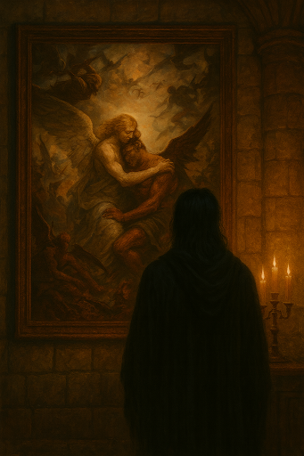
O antigo anjo não respondeu de imediato. Só virou o rosto lentamente, os olhos pesados como os portões da morte.
— Não é tão simples quanto prender ar numa garrafa, garoto.
— Mas você prometeu — rebateu Vidal, firme. — Disse que me deixaria tentar... se eu terminasse a leitura.
Tanatos suspirou, e o silêncio estalou como gelo sob os pés.
— Prometi — disse por fim, virando-se por completo. — Então venha. Está na hora de conhecer a Forja Tanúrgica.
Os dois caminharam em direção às entranhas do castelo, onde escadas de ossos levavam a fornalhas que nunca se apagavam. Enquanto desciam, Tanatos falava.
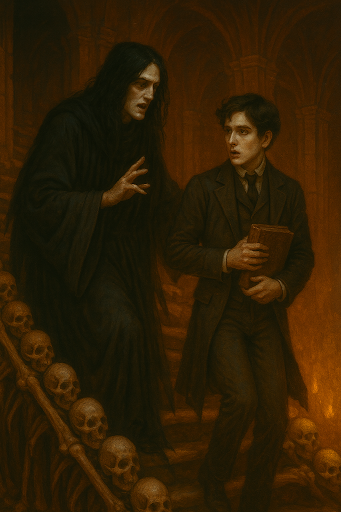
— A Tanurgia não é sobre criar armas. É sobre forjar prisões com forma de armas. Cada artefato selado é um túmulo. Uma maldição viva. Há milênios, o rei Salomão selou 72 demônios... em moedas. Simples moedas. E ainda assim, eles tentam escapar até hoje.
— Moedas?! — Vidal franziu a testa. — E... e aquela entidade do espelho? A Mania, certo? Ela também foi presa com Tanurgia?
Tanatos parou. A escada estremecia sob seus pés.
— Sim. Mania era uma das mais difíceis. Um espírito errante que enlouquece tudo que toca. Filha do Arlequim, o Arcano Shim. Uma entidade... que até os deuses evitam nomear.
Vidal engoliu seco. A ideia de encontrar um dia esse tal Arlequim o fazia arrepiar até o último fio.
— Quem conseguiu selar... Mania?
Tanatos o encarou.
— Fui eu.
O silêncio voltou. Mas dessa vez, era mais denso que a pedra.
— E valeu o custo? — Vidal sussurrou.
Tanatos não respondeu. Apenas abriu a porta da Forja Tanúrgica.A sala respirava dor.
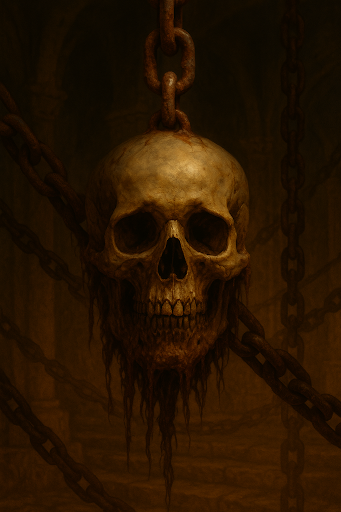
Correntes pendiam do teto como raízes de um mundo morto. Estalavam devagar, batendo umas nas outras, produzindo sons metálicos que lembravam lamentos abafados. No centro da câmara, uma caveira ainda presa à carne apodrecida balançava lentamente, suspensa por elos enferrujados. Os olhos — ou o que restava deles — estavam voltados para baixo, como se ainda carregassem vergonha.
Vidal se aproximou, fascinado e repulsado.
— Quem é... ou foi... isso?
Tanatos não parou de andar. Apenas respondeu com a frieza que se espera de um cadáver andante:
— Um bastardo da Dinastia Vermelha. Um vampiro que tentou se fazer imortal... sem merecer a imortalidade.
Vidal franziu o cenho.
— O que isso significa?
Tanatos parou diante de uma grande mesa de pedra negra, coberta de runas que se contorciam lentamente.
— Significa que toda alma que força sua permanência no mundo dos vivos — sem sabedoria, sem sacrifício, sem justiça — começa a definhar. Primeiro na mente. Depois na carne. E enfim... na alma.
Ele se virou e apontou para o cadáver pendurado.
— Isso aí... é o primeiro passo para se tornar um Demônio.
Vidal olhou de novo para a caveira, agora com olhos mais atentos. Uma das mãos do cadáver estava presa em posição de garra, como se mesmo morto ainda tentasse agarrar algo que nunca teve.
O garoto respirou fundo, buscando se distrair com o ambiente.
— Achei que uma forja teria... fogo. Calor. Labaredas. Mas aqui... é gelo. Frio. Correntes...
— Isso — disse Tanatos, com um leve sorriso fúnebre. — É uma Forja Fria.
— Mas como se forja algo sem fogo?
Tanatos se aproximou de um altar cercado de correntes azuis como veneno congelado. Acima dele, flutuava um fragmento de espelho rachado. Agora eles adentravam uma parte mais gelada da forja.
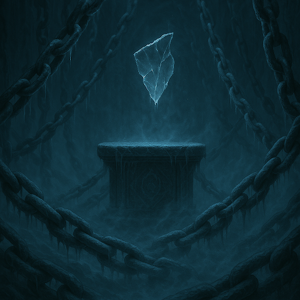
— Com paciência, garoto. Fogo molda o ferro. Frio molda o espírito. E aqui... forjamos prisões para o que não deveria existir.
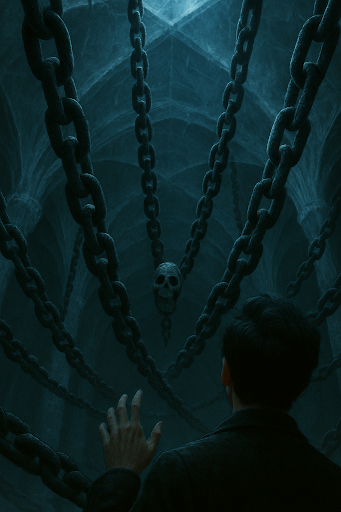
Vidal caminhava entre os elos pendurados como quem pisa em um templo proibido. Seus dedos roçavam o metal negro e frio, como se pudesse absorver alguma sabedoria por osmose.
— Eu li sobre as Correntes Negras de Tanatos num dos volumes antigos da Torre Cega... — disse, hesitante. — São essas?
Tanatos se voltou, e por um breve instante, seus olhos pareceram feitos de sombra líquida.
— São. Muito tempo atrás, durante a antiga Guerra Celeste, precisei enfrentar uma ameaça que até os Arcanjos evitavam: os Asuras, entidades que se rebelaram e se aliaram aos Caídos. Nenhuma prisão divina os continha. Nenhuma luz os queimava. Foi então que criei as Correntes de Ônix, embebidas em minha própria culpa... e moldadas com uma liga que só existe em minha alma.
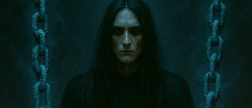
Ele fez uma pausa. Um silêncio que parecia pesar toneladas.
— Mas essa arte... escureceu meu espírito.
Vidal abaixou os olhos, como quem respeita uma ferida que ainda sangra. Mas não resistiu:
— E... sobre Morsme Tenebris?
Tanatos se virou completamente agora. Seu rosto — que carregava rugas onde antes havia estrelas — se enrijeceu.
— Morsme... — ele murmurou, quase como quem recita o nome de um pesadelo. — Eu fui o carcereiro. Mas não o vencedor. Os que o derrotaram foram Taris e Leonidas. Dois homens que, desesperados, vieram até mim e imploraram por aprender a Tanurgia. Mas havia um problema: o espírito de Morsme era denso demais. Indomável. Não poderia ser selado... Até esfriar.
— Esfriar? — Vidal franziu a testa.
Tanatos tocou uma das correntes. O som que ecoou parecia um gemido de montanha.
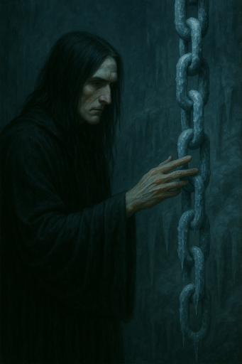
— Essas correntes são feitas de Ônix Primordial e da Liga de Sombria Forja, uma criação minha. Elas não ferem com calor. Elas ferem com frio absoluto. E esse frio atinge não apenas a carne... mas os quatro corpos da vítima.
— Quatro corpos?
— Sim, garoto. Físico. Mental. Alma. Espírito. Essas são as quatro camadas da existência consciente. As correntes de Ônix mergulham cada camada em um inverno impossível. Um frio que não dói como gelo... mas como solidão, arrependimento, culpa. Elas tornam a essência da criatura maleável. Como argila cansada.
Ele parou diante de um pedestal onde uma runa pulsava em ritmo lento.
— Só então... é possível manusear alma e espírito como se fossem matéria. Mas o tempo necessário... Para alguns, são anos. Para outros, como Morsme... Milênios.
O silêncio caiu como neve.
— Por que ele era tão poderoso? — Vidal perguntou, quase num sussurro.
Tanatos suspirou. O som saiu como um trovão cansado.
— Porque ele acessou um conhecimento oculto. Uma arte ancestral, enterrada por todos os reinos, de uma linhagem esquecida. Chamavam-na de Arcanum Daath. Depois, ele ensinou esse saber para Morgana, que o distorceu... E Nix, que o devorou.
Ele olhou para Vidal com uma gravidade que parecia dobrar o espaço.
— Essa arte... não devia existir. Mas enquanto houver quem a busque... haverá necessidade da Tanurgia. E de Tanurgos dispostos a pagar o preço.O frio da forja parecia respirar pelas paredes, e o silêncio que se formara ali era mais denso do que qualquer bruma. Vidal mantinha os olhos fixos na muralha de gelo vivo, sentindo, no fundo do peito, o peso de estar diante de algo que ultrapassava a compreensão comum.
— Por que dizem que essa arte não deveria existir? — perguntou, a voz quase engolida pelo eco glacial.
Tanatos não respondeu de imediato. O olhar perdido nas brasas azuis revelava mais do que as palavras que viriam. Por fim, falou com calma — e um traço de pesar.
— Porque a Tanurgia não purifica o mal — disse ele. — Ela o congela. Transforma o horror em lâmina... sem dissolvê-lo. Preserva a alma corrompida em forma. E tudo que é preservado... continua existindo.
Vidal sentiu a verdade daquelas palavras como um corte lento.
— Foi por isso que foi expulso dos céus? — arriscou.
Um sorriso tênue, sem alegria, dançou no canto da boca de Tanatos.
— Em parte. Alguns males precisam ser compreendidos... outros, contidos. Eu escolhi conter.
O silêncio que se seguiu parecia mais frio que o gelo à volta. Mas Tanatos não deixou que se prolongasse.
— E Morsme não foi o único que prendi — disse, agora com ares de lembrança pesada. — Também derrotei Babalon, filha do Rei Vermelho.
Vidal arqueou as sobrancelhas, surpreso.
— Quem?
— Babalon — repetiu Tanatos, com a gravidade de quem nomeia um cataclisma antigo. — Uma entidade da linhagem oculta. Aprendeu a moldar a realidade à sua vontade. No auge do seu poder, deu muito trabalho. Os Sete Magos do Infinito e quatro Potestades — eu entre eles — lutamos contra ela em Mahara. A vitória só foi possível por causa de Merlin... e da Excalibur. Fui eu quem a selou, por fim, na Torre do Lamento.
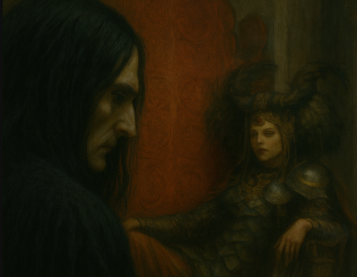
As brasas da forja pareciam tremer com a menção do nome.
— Ela está mesmo presa? — indagou Vidal, com o olhar duro. — E... o que pretende fazer com ela?
Tanatos inclinou-se um pouco mais sobre o fogo, como se aquecesse memórias antigas.
— Foi dividida em duas partes por Taris, com um feitiço Gemini. A segunda parte está isolada. Ele temia que forças inimigas tentassem usar seu poder fragmentado. Se um dia eu transmutá-la... será uma adaga. Mas seu espírito ainda precisa esfriar. Séculos, talvez.
O silêncio pesou mais uma vez, até que Vidal arriscou:
— E o que Damocles faz... não é a mesma coisa?
Tanatos soltou um pequeno riso, baixo e rouco.
— Não. Damocles usa a Clavurgia. Sela uma entidade num objeto feito para contê-la. Se for um lobisomem, usará prata. A forma é moldada para o espírito.
Vidal refletiu por um instante, até que uma imagem lhe veio à mente.
— Como se fizesse o sapato certo pro pé — disse.
O riso de Tanatos soou mais genuíno, desta vez.
— Exato. E eu... faço o pé virar o sapato.
Vidal engoliu em seco. Sua mente girava.
— E existe alguma arte pior que essa?
Tanatos assentiu devagar, os olhos mergulhados nas chamas.
— Existe. A Ancorurgia. Nela, o pé... controla o sapato. Cria-se uma âncora. Um objeto que segura apenas um fragmento da entidade. Com isso, você não sela... você domina. Poucos ousam praticá-la.
O silêncio ainda pairava como uma poeira densa, até que Vidal, com a mente revirando o que acabara de ouvir, ergueu os olhos para Tanatos.
— E por que não existem... Ancorurgos? — indagou, com uma nota de desconfiança na voz. — Se essa arte é tão poderosa, por que ninguém a domina?
Tanatos caminhava lentamente, com as mãos cruzadas nas costas. Parou, então, diante de uma parede entalhada com inscrições antigas e voltou-se para ele.
— Porque essa arte... era apenas teórica. Um risco filosófico, rabiscado em margens de pergaminhos proibidos. Ninguém ousou praticá-la — disse com pesar, e um brilho sombrio no olhar. — Ninguém... exceto um. Aquele que abriu o SEFER DAATH.
Vidal franziu o cenho, surpreso.
— O quê é o Sefer Daath?
Tanatos suspirou. Não havia pressa em suas palavras, como se cada uma tivesse o peso de eras.
— Muito antes do tempo — começou —, na alvorada da existência, quando o Verbo ainda era jovem, Metatron escreveu onze livros. Onze mundos condensados em sabedoria pura. Os Livros de Safira. Os Sefer. Cada um representava uma linhagem da Criação. Mas um... foi banido.
Ele deu um passo à frente, o som ecoando fundo sob o chão metálico da forja.
— O Sefer Daath — continuou — continha os mistérios proibidos, a sabedoria da ruptura, da vontade que se sobrepõe à harmonia. Com seus ensinamentos... nasceu um reino, moldado a partir daquilo que deveria permanecer esquecido. O reino de MADAH. Conhecido hoje como o Reino de Daath. Próximo das ruínas de Solaria, no antigo mundo colossal de Patar, o planeta de pedra.
Vidal absorvia cada palavra como quem tateia as bordas de um abismo.
— Então... — murmurou — é como se várias pessoas, em diferentes tempos ou lugares, estivessem estudando o mesmo conhecimento proibido... e, mesmo sem se conhecerem, chegassem às mesmas conclusões.
Tanatos riu baixinho, com a sombra de um sorriso envelhecido.
— Merlin costumava brincar — disse. — Dizia que o Sefer Daath era, basicamente, um manual... de como se tornar um vilão.
Vidal soltou um suspiro nervoso, sem saber se ria ou temia. O ar à sua volta parecia mais denso agora, mais carregado de presságios.
Adentraram o centro da forja, onde o calor tomava forma e o mundo parecia feito de ferro e faíscas. Ali, no coração pulsante do conhecimento proibido, Tanatos parou diante de um altar de obsidiana.
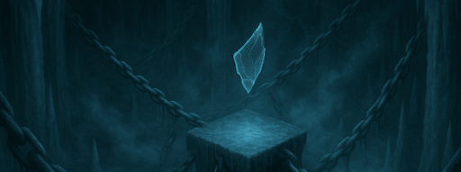
— Chegou a hora — disse ele, olhando por sobre o ombro. — Agora... eu vou te ensinar.
Adentraram o centro da forja, onde o frio tomava forma e o mundo parecia esculpido em cristal e neblina. Ali, no coração gelado do conhecimento proibido, Tanatos parou diante de um altar de gelo negro.
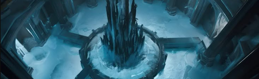
FIM
.
#002EM BREVE